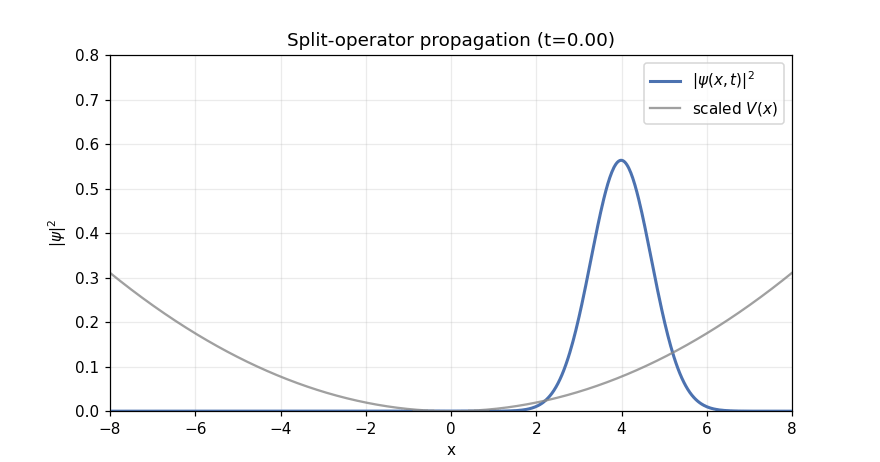

Split-Operator Method (Quantum Time Propagation)
The split-operator (a.k.a. split-step Fourier) method is a workhorse algorithm to evolve the time-dependent Schr"odinger equation
In 1D, typically
The math behind it (Trotter + Strang)
The formal time-evolution over a step \(\Delta t\) is
The difficulty is that \([\hat{T},\hat{V}]\neq 0\) in general, so
A key idea is the Trotter product formula: for operators \(\hat{A},\hat{B}\) (under appropriate conditions),
For finite \(\Delta t\), we use a higher-accuracy symmetric split (Strang splitting):
With
we obtain the standard split-operator propagator
Two important consequences:
Second-order global accuracy: local error is \(\mathcal{O}(\Delta t^3)\), hence global error after \(N\sim T/\Delta t\) steps is typically \(\mathcal{O}(\Delta t^2)\).
Unitarity (norm preservation): each factor is unitary (exponential of a Hermitian operator times \(-i\)), so the method preserves \(\|\psi\|_2\) up to numerical roundoff.
Why it is fast (Fourier diagonalizes the kinetic term)
In coordinate space, the potential exponential is pointwise multiplication:
The kinetic exponential is easiest in momentum (or wave-number) space. Let \(\tilde\psi(k)=\mathcal{F}[\psi](k)\). Since \(\hat{p}=\hbar k\) on plane waves, one has
So one time step is:
Multiply in \(x\) space by \(e^{-\frac{i}{\hbar}V(x)\Delta t/2}\).
FFT to \(k\) space.
Multiply in \(k\) space by \(e^{-i\frac{\hbar k^2}{2m}\Delta t}\).
Inverse FFT back to \(x\) space.
Multiply again by \(e^{-\frac{i}{\hbar}V(x)\Delta t/2}\).
This costs \(\mathcal{O}(N\log N)\) per step (FFT) and is typically much faster than finite-difference implicit solvers for large grids.
Practical notes
Boundary conditions: FFT implies periodic boundaries; use a large domain + absorbing layers (complex absorbing potential) if needed.
Time step: choose \(\Delta t\) small enough to resolve phase oscillations from both \(T\) and \(V\).
Normalization: the algorithm is norm-preserving, but a sanity check \(\int |\psi|^2 dx\) helps catch discretization mistakes.
Animated example (Gaussian wavepacket in a harmonic trap)
Below is an original animation generated from a 1D harmonic potential \(V(x)=\tfrac{1}{2}m\omega^2x^2\). A displaced Gaussian wavepacket oscillates in the trap while spreading slightly due to dispersion.

Probability density \(|\psi(x,t)|^2\) evolved via the Strang split-operator method.
Step-by-step Python (1D)
This is the minimal structure of a 1D implementation.
Choose a grid \(x_j\) and its FFT wave-number grid \(k_j\).
Build \(V(x)\) and precompute phase factors
\[P_V(x)=e^{-\frac{i}{\hbar}V(x)\Delta t/2},\qquad P_T(k)=e^{-i\frac{\hbar k^2}{2m}\Delta t}.\]Iterate the Strang step:
\[\psi \leftarrow P_V\,\psi,\quad ilde\psi\leftarrow \mathcal{F}[\psi],\quad ilde\psi\leftarrow P_T\,\tilde\psi,\quad \psi\leftarrow \mathcal{F}^{-1}[\tilde\psi],\quad \psi \leftarrow P_V\,\psi.\]
Concrete snippet:
import numpy as np
# Step 1: grid
n = 1024
x_max = 12.0
x = np.linspace(-x_max, x_max, n, endpoint=False)
dx = x[1] - x[0]
k = 2*np.pi*np.fft.fftfreq(n, d=dx)
# Parameters
hbar = 1.0
m = 1.0
dt = 0.02
# Step 2: potential and phases (example: harmonic)
omega = 1.0
V = 0.5*m*omega**2*x**2
P_V = np.exp(-1j*V*(dt/2)/hbar)
P_T = np.exp(-1j*(hbar*k**2)*dt/(2*m))
# Step 3: initial state (example: Gaussian)
psi = np.exp(-(x-4.0)**2/2.0) * np.exp(1j*0.0*x)
psi = psi / np.sqrt(np.sum(np.abs(psi)**2)*dx)
# Step 4: one Strang step
psi = P_V * psi
psi_k = np.fft.fft(psi)
psi_k = P_T * psi_k
psi = np.fft.ifft(psi_k)
psi = P_V * psi
Reproducibility
The GIF was generated by the script:
1import pathlib
2
3import matplotlib.animation as animation
4import matplotlib.pyplot as plt
5import numpy as np
6
7ROOT = pathlib.Path(__file__).resolve().parent.parent
8IMG_DIR = ROOT / "images"
9IMG_DIR.mkdir(parents=True, exist_ok=True)
10
11
12def make_grid(n: int = 1024, x_max: float = 12.0) -> tuple[np.ndarray, float, np.ndarray]:
13 """Step 1: Build a 1D periodic grid x and its FFT-compatible k grid."""
14 x = np.linspace(-x_max, x_max, n, endpoint=False)
15 dx = float(x[1] - x[0])
16 k = 2.0 * np.pi * np.fft.fftfreq(n, d=dx)
17 return x, dx, k
18
19
20def harmonic_potential(x: np.ndarray, m: float, omega: float) -> np.ndarray:
21 """Step 2: Define the potential V(x)."""
22 return 0.5 * m * omega**2 * x**2
23
24
25def gaussian_wavepacket(x: np.ndarray, x0: float, sigma: float, k0: float) -> np.ndarray:
26 """Step 3: Initialize a normalized Gaussian wavepacket."""
27 psi = (1.0 / (np.pi * sigma**2) ** 0.25) * np.exp(-((x - x0) ** 2) / (2.0 * sigma**2)) * np.exp(1j * k0 * x)
28 return psi
29
30
31def normalize_l2(psi: np.ndarray, dx: float) -> np.ndarray:
32 """Step 4: Normalize so that sum(|psi|^2) dx = 1."""
33 norm = float(np.sqrt(np.sum(np.abs(psi) ** 2) * dx))
34 return psi / norm
35
36
37def split_operator_step(psi: np.ndarray, v: np.ndarray, k: np.ndarray, dt: float, hbar: float, m: float) -> np.ndarray:
38 """One Strang-splitting time step: V(dt/2) -> FFT -> T(dt) -> IFFT -> V(dt/2)."""
39 phase_v_half = np.exp(-1j * v * (dt / 2.0) / hbar)
40 psi = phase_v_half * psi
41
42 psi_k = np.fft.fft(psi)
43 phase_t = np.exp(-1j * (hbar * k**2) * dt / (2.0 * m))
44 psi_k = phase_t * psi_k
45 psi = np.fft.ifft(psi_k)
46
47 psi = phase_v_half * psi
48 return psi
49
50
51def main() -> None:
52 # Units: set ħ = m = ω = 1 for a clean demo
53 hbar = 1.0
54 m = 1.0
55 omega = 1.0
56
57 # Step 1: grid
58 x, dx, k = make_grid(n=1024, x_max=12.0)
59
60 # Step 2: potential
61 v = harmonic_potential(x, m=m, omega=omega)
62
63 # Step 3: initial state
64 psi = gaussian_wavepacket(x, x0=4.0, sigma=1.0, k0=0.0)
65 psi = normalize_l2(psi, dx=dx)
66
67 # Time stepping
68 dt = 0.02
69 steps = 420
70 stride = 3 # render every few steps
71
72 # Precompute a scaled potential curve for plotting context
73 v_plot = v / np.max(v)
74
75 fig, ax = plt.subplots(figsize=(8, 4.2))
76 (line,) = ax.plot([], [], color="#4C72B0", lw=2, label=r"$|\psi(x,t)|^2$")
77 (vline,) = ax.plot([], [], color="#888888", lw=1.5, alpha=0.8, label=r"scaled $V(x)$")
78
79 ax.set_xlim(-8, 8)
80 ax.set_ylim(0, 0.8)
81 ax.set_xlabel("x")
82 ax.set_ylabel(r"$|\psi|^2$")
83 ax.set_title("Split-operator propagation (harmonic potential)")
84 ax.grid(True, alpha=0.25)
85 ax.legend(loc="upper right")
86
87 # Initialize artists
88 def init():
89 line.set_data([], [])
90 vline.set_data(x, 0.7 * v_plot)
91 return (line, vline)
92
93 # Evolve and store frames on the fly
94 psi_state = psi.copy()
95
96 def update(frame_index: int):
97 nonlocal psi_state
98 for _ in range(stride):
99 psi_state = split_operator_step(psi_state, v, k, dt, hbar, m)
100
101 density = np.abs(psi_state) ** 2
102 line.set_data(x, density)
103 ax.set_title(f"Split-operator propagation (t={frame_index * stride * dt:.2f})")
104 return (line, vline)
105
106 frames = steps // stride
107 anim = animation.FuncAnimation(fig, update, init_func=init, frames=frames, interval=30, blit=True)
108
109 out_path = IMG_DIR / "split_operator_wavepacket.gif"
110 try:
111 writer = animation.PillowWriter(fps=30)
112 anim.save(out_path, writer=writer, dpi=110)
113 except Exception:
114 # Fallback: if Pillow isn't available, try ImageMagick.
115 # If this also fails, the exception will show what dependency is missing.
116 writer = animation.ImageMagickWriter(fps=30)
117 anim.save(out_path, writer=writer, dpi=110)
118 plt.close(fig)
119
120 print(f"Wrote: {out_path}")
121
122
123if __name__ == "__main__":
124 main()
Run it to regenerate assets (it writes into docs/_static_files/images).